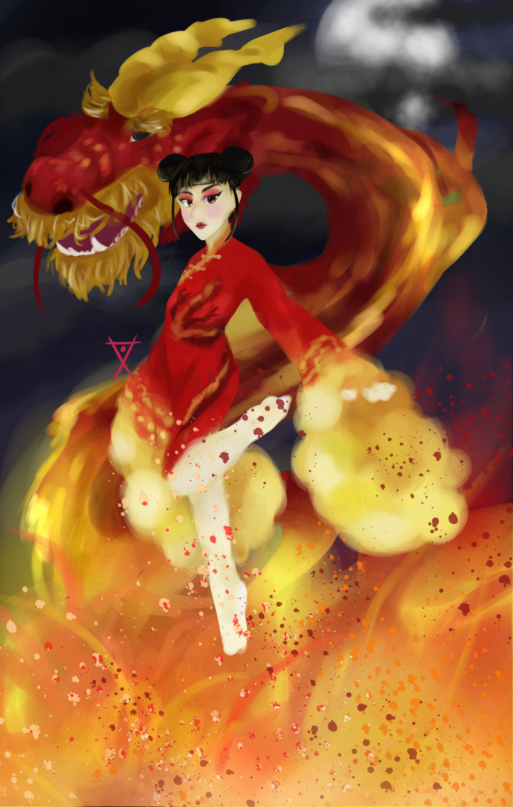

click to contact me
Katharine Moy
Inside the brain of some lame artistic adolescent
Sometimes, I paint and make digital artwork in my free time. Even though I plan to persue a career in Science and Technology, Art is something I've been passionate about since I was young, and I hope to have a job that allows me to be creative.



Especially in Hong Kong, where the streets, subways, and schedules are always packed, people barely have time to appreaciate life. Art is something that not only lets me relax, it also allows me to train my brain to become more flexible
and creative.
Since I was a child, I was always inspired by superheroes and brave protagonists in movies and books. Naturally, and still to this day, I aspire to create my own fictional world. With art, I can take the whimsical delusions in my mind, put them on paper, and share my thoughts
with friends and family. Although they are ficticious, the stories we tell of triumphs, and of heroes who conquer evil are ones that we can implent into our daily lives. The stories I hear or read of can really inspire me to expereince new things and become a better person.